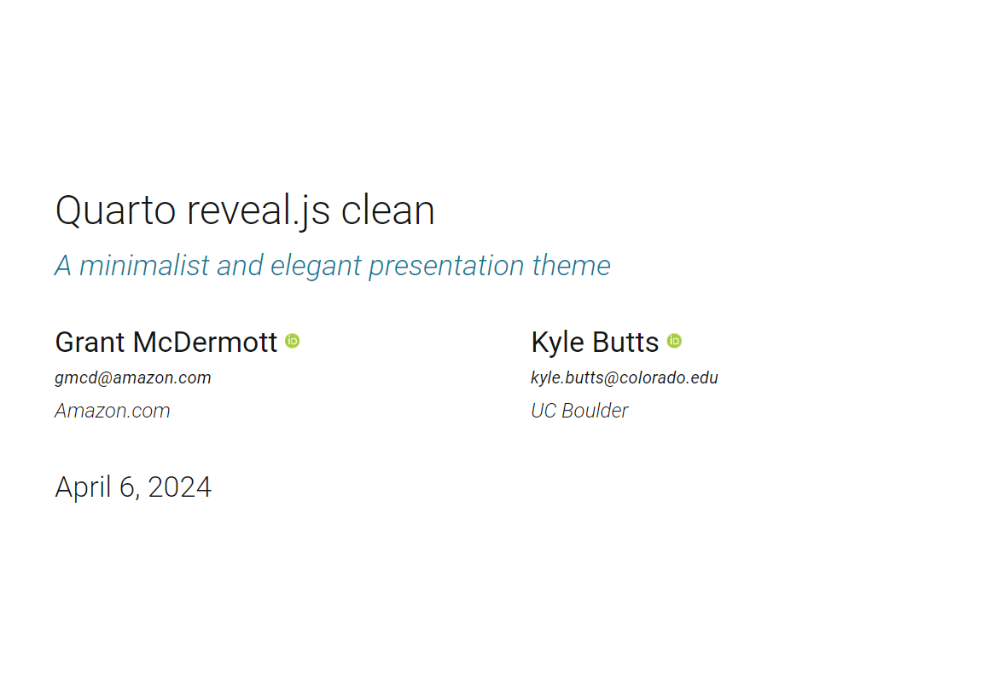

【日本語版】クリーンなスライドを Quarto で作る！
日本語でも使えるスライドをご紹介！
はじめに
別記事で、Beamer 風の Reveal.js スライドをご紹介しましたが、英語にしか対応していませんでした。というのも、あのフォントと釣り合う日本語のフォントが思いつかなかったからです。
今回は、別のデザインで日本語にも対応したスライドのテンプレートをご紹介します。デザインに困っている方はぜひ使ってみてください！
テーマ
テーマは、Quarto 公式でも紹介されている clean-revealjs をアレンジしたものです。

そして、今回ご紹介するスライドはこちらです。
タイトルやヘッダーなどのフォントは、Google Fonts から、Zen Maru Gothic を使っています。
また、サブヘッダーも追加しています。サブヘッダーが水色っていうのがいいですよね、なんか。
ポイント
とりあえず見てみよう
このスライドは、結構嬉しいポイントとして、移動ボタンが準備されているということがあります。
これはどういうことか、こちらをご覧ください。
結構すごくないですか？PDF だと図や表に飛べたりしますが、自分でスライドを作っていて戻るのめんどいな、と思うことがあったので、結構重宝しています。
使い方
使い方はデモスライドに書いた通り、[[図へ]{.button}](#sec-cars) です。これをする上で必要な準備があるので、それをまとめます。
スライドにラベルを付ける
この機能、個人的には便利だなと思うのですが、図には直接飛べないのが玉に瑕です。要は図に飛ぶのではなく、図があるスライドに飛ぶ必要があるということです1。
ラベルを付けるには、次のようにします。
Quarto
## ヘッダー
### サブヘッダー {#sec-hogehoge}hogehoge の部分は適宜変更してください。波括弧で囲み、#sec- で始めることでラベルを付けることができます。セクションの場合は必ず #sec- で始める必要があるので注意してください。
ボタンを作る
先述の通り、ボタンを作るには、任意の場所で次のように書きます。
Quarto
[[図へ]{.button}](#sec-hogehoge)中の [] は表示したいテキストで、() の中はラベル名です。ラベル名はセクションのラベル名を指定してください。
帰れないと意味がない
図（があるセクション）へ飛ぶボタンを作ったら、図から戻るボタンも作りましょう。せっかく何ページも飛んでいったのに、戻るのに1スライドずつ戻っていたのでは意味がありません。
例えば、次のようにします。
Quarto
[[戻る]{.button}](#sec-hogehoge)これで、図から戻るボタンが作れます。1つの図を複数の箇所から参照する場合、「○○へ戻る」2として、複数のボタンを作るとよいでしょう。
横に並べたいときは Quarto の機能を活かして、
Quarto
:::: {.columns}
::: {.column width="50%"}
[[セクション1へ戻る]{.button}](#sec-hogehoge)
:::
::: {.column width="50%"}
[[セクション2へ戻る]{.button}](#sec-fugafuga)
:::
::::とすれば、横に並べてボタンを配置できます3。
scss ファイルをゲット
このスライドを使うには、こちらをクローンするか、ZIP ファイルダウンロードするかして、clean-slide.scss を入手してください4。
これを Quarto ファイルと同じディレクトリに置いてください。
重ねてになりますが、詳しいスライドの作り方はこちらを参照してください。
おわりに
今回は、日本語にも対忘したスライドのテンプレートをご紹介しました。
Quarto などの Markdown でスライドを作るのは、パワポより体裁が整うし5、個人的に Beamer よりは簡単に作れると思います。
ぜひ、Quarto でスライドを作ってみてください！